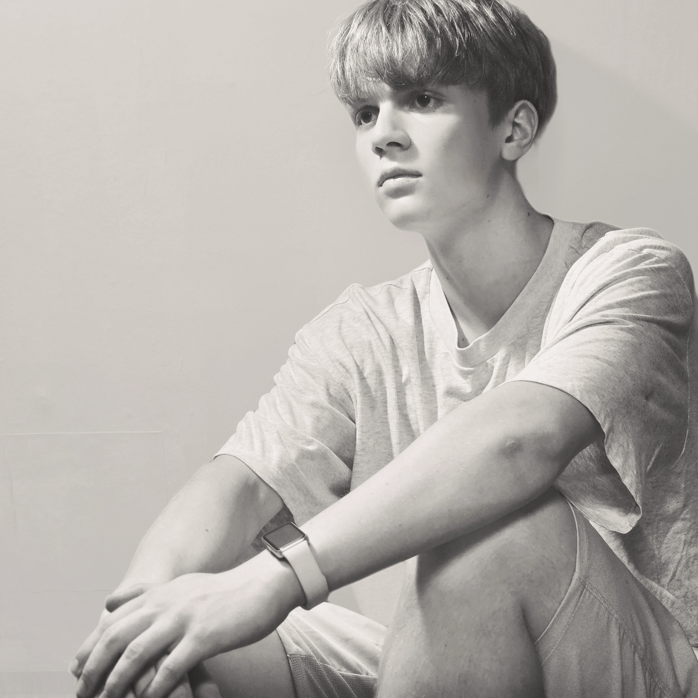

Featured film
Thinking
A full ambient visual work written, produced and mixed by Romanich. Minimal movement leaves room for the music—and for your own thoughts.
Ambient video journal · 2026
Quiet instrumental music and slow-moving images for studying, reflecting, resting—or simply letting a moment pass without rushing it.
Enter the seriesNew ambient videos
These visual sessions pair Romanich’s ambient and lo-fi instrumentals with restrained imagery. Each piece is an invitation to listen without needing to arrive anywhere.
Featured film
A full ambient visual work written, produced and mixed by Romanich. Minimal movement leaves room for the music—and for your own thoughts.
A longer instrumental session built around the Classic Mellow collection.
A compact visual excerpt from Thinking: lo-fi atmosphere in a smaller frame.

About the series
The ambient video journal is a quieter branch of Romanich’s work. It brings together piano-led ideas, soft electronic textures and simple visual studies—music made for late evenings, open notebooks and the spaces between decisions.
The series will grow as new visual pieces are completed.
Continue listening
Follow the full video channel or continue into Romanich’s music catalog.